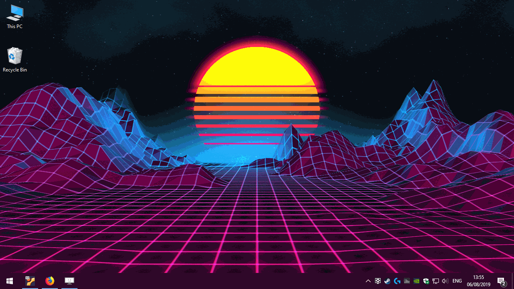
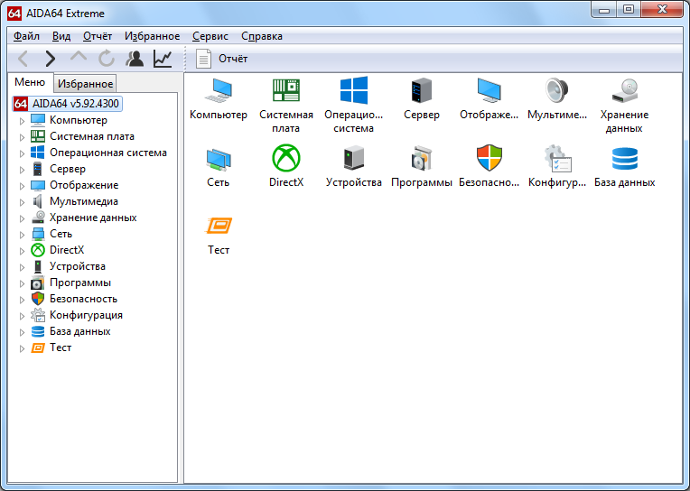

Коротко о разделе
Вы попали в раздел полезных программ сайта Cyberus, здесь вы найдёте их описание и ссылку на скачивание. Эти программы были единолично отобраны и протестированны нашей редакцией. Если же вы мне не доверяете, то мы оставили ссылку на официальный сайт производителя специально для вас :D
1) Ccleaner

CCleaner — бесплатная программа, которая предоставляет пользователям простой в использовании инструмент для очистки и оптимизации операционных систем Windows. Утилита была создана британской фирмой Piriform Limited и написана на C++. Обычно новая версия дистрибутива выходит каждый месяц.
На декабрь 2012 года с официального сайта программы было совершено более 1 миллиарда загрузок.
2) Wallpaper Engine
Wallpaper Engine — это приложение для Windows с сопутствующим приложением на Android, которое позволяет пользователям использовать и создавать анимированные и интерактивные обои. Программа оснащена собственным движком Рендеринга и предоставляет редактор обоев, позволяющий создавать 2D и 3D обои. Он также поддерживает использование видеофайлов, аудиофайлов, веб-страниц и некоторых 3D-приложений в качестве обоев.
К сожалению данная программа платная и для скачивания доступна только в Steam
3) OBS Studio

OBS нужен для захвата экрана для стримов. Аппаратные аналоги конечно лучше, но они стоят денег.
Open Broadcaster Software (OBS) — свободная программа с открытым исходным кодом для записи видео и потокового вещания, разрабатываемая проектом OBS и сообществом независимых разработчиков.
4) ShareX

Нужна для создания скриншотов, записи экрана без звука, пересылка всего вышеупомянутого на множество платформ одновременно и простого фото-видео редактора.
ShareX — это бесплатная программа для создания скриншотов и скринкастов с открытым исходным кодом для Microsoft Windows. Исходный код проекта размещен на GitHub. Он также доступен в Microsoft Store и Steam.
5) Aida 64
По сути улучшенный диспетчер задач, но с фокусами. Хоть и является условно-бесплатной программой, но всё равно прекрасна.
AIDA64 — утилита FinalWire Ltd. для тестирования и идентификации компонентов персонального компьютера под управлением операционных систем Windows, предоставляющая детальные сведения об аппаратном и программном обеспечении. Является последовательницей утилиты Everest, принадлежащей с 2004 по 2010 года компании Lavalys, которая в свою очередь основана на AIDA32